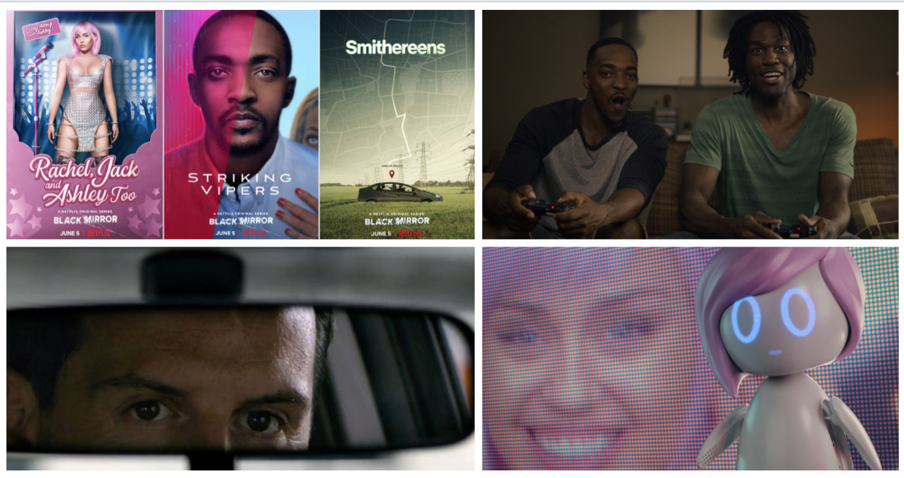

Temporada 1

El primer ministro
Michael Callow se enfrenta a un impactante dilema cuando la princesa Susannah, miembro muy querido de la familia real, es secuestrada. El captor pide que el primer ministro mantenga relaciones sexuales con un cerdo en directo a cambio de la vida de la princesa.
15 Millones de Méritos
Un mundo donde la gente gana méritos haciendo ejercicio para generar energía; los méritos se emplean para comprar comida, aseo y saltar anuncios publicitarios indeseados. En este entorno, la gente aspira a mejorar su vida usando sus talentos para el canto, o para la pornografía.
Toda nuestra Historia
En un futuro cercano, todo el mundo tendrá acceso a un implante de memoria que grabe todo lo que los humanos hagan, vean y oigan.
Temporada 2

Vuelvo enseguida
Después de enterarse de un nuevo servicio que permite a la gente estar en contacto con los muertos, Martha, solitaria y afligida, conecta con su difunto novio.
El Oso blanco
Victoria se despierta y no puede recordar nada de su vida. Todo el mundo con el que se encuentra, se niega a comunicarse con ella.
El momento Waldo
Un cómico fracasado que pone la voz a un oso de dibujos animados se ve arrastrado a la política cuando los ejecutivos quieren que el oso se presente como candidato.
Temporada 3
Caida en picada
Desesperada por aumentar su popularidad en las redes sociales, una mujer acude ilusionada a una boda de alto copete. Pero el viaje no sale como tenía previsto.
Partida
Un viajero estadounidense que anda mal de dinero se apunta a ser probador de un nuevo sistema de videojuegos. Pronto descubrirá que la ficción a veces es demasiado real.
Callate y baila
Un virus ha hackeado la computadora de un introvertido joven que debe enfrentar una terrible decisión: o sigue las órdenes que recibe por SMS o sus secretos más íntimos verán la luz.
Odio Nacional
Una periodista muere envuelta en polémica en las redes sociales. Al investigar, una veterana policía y su discípula, experta en tecnologías, descubren algo espantoso.
Hombre contra el fuego
Después de su primera batalla con un esquivo enemigo un soldado empieza a tener sensaciones extrañas y fallos técnicos muy raros.
Temporada 4
El comandante
Robert Daly dirige a su tripulación con sabiduría y coraje, pero una nueva recluta descubrirá que en la nave USS Callister no todo es lo que parece.
Arcángel
Una madre soltera preocupada por la seguridad de su hija decide implantarle un dispositivo de alta tecnología que monitoriza su localización. Y muchas otras cosas.
Cocodrilo
Mia es una arquitecta que debe guardar un terrible secreto mientras una investigadora de seguros examina los recuerdos de los testigos de un accidente..
Hang the DJ
Cuando Frank y Amy se conocen gracias a un programa de citas que pone fecha de caducidad a las relaciones, pronto empiezan a cuestionarse la lógica del sistema.
Museo Negro
Una joven descubre en plena autopista un museo que contiene objetos criminológicos supuestamente auténticos... y que ofrece una perturbadora atracción principal.
Temporada 5
Striking Vipers
Dos amigos de la universidad se reencuentran en la versión para realidad virtual de su videojuego favorito y las trasnoches juntos traen consecuencias inesperadas.
Smithereens
Un conductor londinense de viajes compartidos desencadena una crisis internacional cuando secuestra a un trabajador de una empresa de medios sociales.
Rachel, Jack and Ashley Too
Una adolescente solitaria se obsesiona con una muñeca robótica inspirada en Ashley O, una estrella pop. Mientras tanto, la vida de la cantante comienza a descarrilarse.